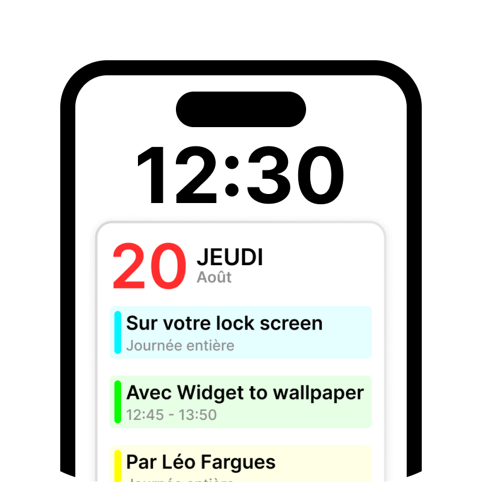

Setup Widget to Wallpaper
Guide pas à pas pour configurer votre calendrier et automatiser le fond d'écran iOS.
1. Obtenir l'URL iCal depuis Google Calendar
Récupérez l'adresse secrète privée de votre agenda pour synchroniser automatiquement vos événements.
- Rendez-vous sur Google Agenda sur votre ordinateur.
- Dans la colonne latérale gauche, repérez la liste « Mes agendas ».
- Survolez votre agenda principal et cliquez sur les trois points verticaux (⋮) à droite.
- Cliquez sur « Paramètres et partage ».
- Faites défiler vers le bas jusqu'à la section « Intégrer l'agenda ».
- Localisez le champ « Adresse secrète au format iCal ».
-
Copiez l'URL complète (elle se termine par
basic.ics).
2. Entrer l'URL dans le fichier d'environnement
Ajoutez votre variable d'environnement pour que le serveur charge votre calendrier.
💻 En local (Développement) :
-
Dupliquez le fichier exemple à la racine du projet :
Terminal
cp .env.example .env -
Ouvrez le fichier
.envet collez votre URL iCal obtenue à l'étape 1 :.envGOOGLE_CALENDAR_ICAL_URL="https://calendar.google.com/calendar/ical/VOTRE_IDENTIFIANT/basic.ics"
☁️ En production (Vercel) :
GOOGLE_CALENDAR_ICAL_URL avec votre URL secrète en valeur.
3. Personnaliser et générer l'URL du fond d'écran
Configurez le thème, la taille d'affichage et prévisualisez le rendu en direct avant de passer au raccourci.
https://votre-projet.vercel.app/api/wallpaper?theme=light&variant=default4. Installer et configurer le Shortcut iOS
Téléchargez et configurez le raccourci Apple officiel pour générer et appliquer le fond d'écran.
Ouvrez ce lien depuis votre iPhone pour ajouter le raccourci directement à votre application Raccourcis :
⚡ Installer le Shortcut iOSComment le configurer :
-
Copiez l'URL de votre API configurée à l'étape précédente :
URL de l'API
https://votre-projet.vercel.app/api/wallpaper?theme=light&variant=default - Cliquez sur le bouton ci-dessus « ⚡ Installer le Shortcut iOS » depuis votre iPhone.
- Sur l'écran d'installation, appuyez sur « Configurer le raccourci ».
- Collez l'URL de votre API dans la case « URL », puis appuyez sur « Suivant ».
- Sélectionnez votre fond d'écran avec le bouton « Choisir ».
- Appuyez ensuite sur « Ajouter ce raccourci ».
- Exécutez le raccourci une première fois manuellement et appuyez sur « Toujours autoriser » lorsque iOS demande les permissions.
5. Installer l'automatisation
Configurez le changement automatique de votre fond d'écran à des heures clés de la journée.
- Ouvrez l'application Raccourcis sur votre iPhone et rendez-vous dans l'onglet « Automatisation » en bas.
- Touchez le bouton « + » (en haut à droite) ou « Nouvelle automatisation ».
-
Choisissez « Heure de la journée » (ex:
07:00pour le matin ou20:00pour le soir) et cochez « Tous les jours ». - Sélectionnez « Exécuter immédiatement » et assurez-vous que « M'avertir lors de l'exécution » est désactivé.
- Touchez « Suivant », puis sélectionnez « Exécuter le raccourci » et choisissez le raccourci installé à l'étape 4.
- Validez avec « Terminé ».